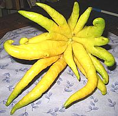
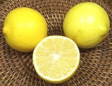
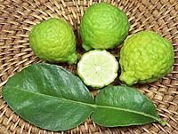
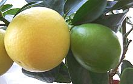
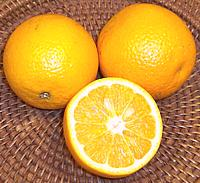

SAFARI
Users
Rutaceae
- Various non-Citrus Genera and SpeciesCitrus
- Genus within Rutaceae- Citron
- Japanese Citrus
- Lemons
- Limes & Related
- Oranges & Related
- Pomelos & Grapefruit
- Tangerine / Mandarin & Related
- Other Citrus - Calamansi, Kumquat, Orangequat
- Links
Rutaceae - General
This section contains members of the family Rutaceae that are not of the genus Citrus.
Varieties
Bael
[Bengal quince, Golden apple, Japanese bitter orange, Stone apple, Wood apple; Ohshit (Burma); Aegle marmelos]
This medium size tree is native to India, Nepal, the Andaman and Nicobar
Islands, and Burma, as well as naturalized in Sri Lanka, Thailand and
Malesia.The ripe fruit, up to the size of a Pomello, is yellow when ripe
and has an extremely hard rind that must be broken open with a mallet or
machete. The aromatic pulp surrounding the seeds is use both for food and
medicinally throughout the tree's range. The flavor is similar to
marmalade made from citrus and tamarind. It is usually used to make
beverages, either from fresh fruit or by soaking dried slices in
water. The leaves and small shoots are eaten as salad greens.
Photo by Asit K. Ghosh distributed under license
Creative Commons
Attribution-ShareAlike v3.0 Unported.
Curry Leaf
[Kari Leaf; Karuveppilai (Tamil, Malay (Black Neem Leaf)); Kari Patta (Hindi); R. Murraya koenigii]
Essential to the cuisines of Southern India and Sri Lanka this citrus
leaf has no substitute and is not worth much dried. Fortunately it is
now grown in Southern California and can be had fresh from most Indian
markets, at least around here. They keep only a few of weeks refrigerated
and not as long as you'd expect in the freezer, unless you freeze them
covered with water. The tree bears pea sized black berries with a sweet
resinous taste, but I've not heard of them being used for cooking.
Details & Cooking.
Gin Berry
[Orangeberry; Glycosmis pentaphylla]
This large shrub is native to South, East and Southeast Asia, and
northern Australia. The juicy fruit, up to 0.4 inch diameter, is spicy,
tasting somewhat like gin. It has found some popularity in cultivation
in the Caribbean region.
Photo by Fagg, M., credit to
Australian National Botanic Gardens
.
Lemon Aspen
[Acronychia acidula]
This plant is native to north Queensland, in northeast Australia. It
produces small, tart, aromatic fruit, about 1 inch diameter, with a
lime-grapefruit flavor. It is cultivated on a small scale in commercial
bushfood orchards. The fruit is popular in beverages, confections and
sauces, and is valued for its high antioxidant content. It is also
made into jam similar in flavor to marmalade.
Photo by John Moss contributed to the Public Domain.
Limonia
[Wood apple, Elephant apple, Monkey fruit, R. Limonia acidissima]
Native to South and Southeast Asia from Pakistan to Java and as far south as
Sri Lanka, this fruit has a rind so hard it can be carved into utensils.
The fruit can be up to 3-1/2 inches in diameter and when cracked emits a
strong citrus aroma from its sticky brown pulp. It is eaten plain, made into
beverages and deserts and preserved as jam. The bark yields an edible gum
used as a thickener, and various parts of the tree are used medicinally.
Photo released into the Public Domain.
Limoncito
[Lime berry, R. Triphasia trifolia]
Native to Malaysia, this fruit is now grown in other subtropical and tropical
regions of the world for it's fruit. The fruit can be up to 5/8 inch in
diameter and resembles a small citrus fruit. It has a sweet citrus like
flavor and a juicy, somewhat mucilaginous pulp. It is used similar to
citrus and may be pickled or made into jams.
Photo copyright
kybrdgal subject to attribution.
Rue
[Herb of Grace, R. Ruta graveolens]
Native to southern Europe, genus Ruta is the type genus for the entire citrus family. Once a significant culinary herb in Rome and the Near East, rue has declined greatly in use due to changing tastes (it is intensely bitter). In Europe and North America it is now grown mainly as a decorative, but is used in cooking in North Africa, particularly Ethiopia where both leaves and berries are used.
Rue does still appear in some traditional recipes in Greece and is
used as a flavoring for certain alcoholic beverages. It has a number of
medicinal uses and is reputed to be a powerful inducer of abortion.
Ironically, it is the national herb of Lithuania and associated with
virginity and maidenhood there.
Details and Cooking.
Peppercorns, Sichuan (Szechwan)
- [Flower Pepper, Prickly Ash (English); Teppal (India); Jiao (china) Zanthoxylum bungeanum, Z. simulans, Z. piperitum and others]
Dried seed pods of the Prickly Ash trees, the "peppercorns" essential to
the famous Sichuan cuisine of China. Similar seed pods are important in
Japan, the Himalayan region, India and Indonesia, They are quite unique
with a remarkably sharp, citrusy flavor and a numbing anesthetic effect
on the tongue. For details and descriptions of a number of species, see
our Sichuan Peppercorns page.
Wampee
[Wampi; Clausena lansium]
This medium size tree is native to Southeast Asia. The moderately sour
fruits are about 0.8 inch diameter and 1.2 inches long. The tree is
popular in cultivation in China, Vietnam, the Philippines, Malaysia,
and Indonesia. It is cultivated to a lesser extent in India and Sri Lanka,
and occasionally in Hawaii and Florida. The fruits normally contain from
2 to 5 seeds, but a seedless variety has been developed.
Photo by WingkLEE contributed to the Public Domain.
White Sapote
[Sleep Sapote; Zapote Blanko (Spanish); Cochitzapotl (Nahuatl = sleep-sapote); Casimiroa edulis]
Native to Eastern Mexico and Central America, this tree became a popular decorative in Southern California in the 1920s - a popularity which waned rapidly as the trees matured and started dropping a couple thousand pounds of sticky fruit on people's patios. Mine is still small and only produces a little over 100 pounds of fruit a year. The fruit is sweet and mild, with a hint of banana, vanilla, peach or pear depending on variety. It is not very marketable because it is extremely tender when ripe and the ripe to over-ripe time is very short.
It has been known since pre-Colombian times that eating this fruit
induces drowsiness. A tea made from the seeds is said to be an effective
sleep potion without noticeable side effects (I haven't tried it yet).
This tree is not to be confused with the Black Sapote, which is a variety
of persimmon, or the Mamey Sapote, of family Sapotaceae.
Citrus - Genus within Rutaceae
General and History
Citrus has a casual attitude toward cross breeding and impromptu variation that rivals even that of the notorious nightshades. Trying to make proper order out of it all is problematic, so some of my practical categorizations here may not be strictly correct botanically - but the botanists can't agree with each other anyway.
The citrus fruits we are familiar with are crosses between two or more other citrus varieties. Citrus is highly promiscuous and doesn't respect species boundaries. There are four wild true-breeding species from which all the others are derived:
- Citrus aurantifolia - Key lime.
- Citrus maxima - Pomelo.
- Citrus medica - Citron.
- Citrus reticulata - Mandarin
Commercial propagation is generally by cuttings because what you'll get from seeds is highly unreliable, and some varieties don't have seeds.
Varieties
Citron
[Citrus medica]
Native to Persia and Media, the Citron was the first citrus fruit brought to Europe, thus gave its name to the whole genus. Citrons are barely edible with a thick lumpy rind and what little flesh they may have is dry and full of seeds. The aromatic oils of its thick peel are widely used for flavoring drinks, perfumes, etc. The peel itself is often cut into strips and candied for use in making fruitcakes - also widely considered inedible.
Citron - Buddha's Hand [Fingered Citron]
This mutation apparently originated in Northeastern India and is
popular as a curiosity. It has no seeds and no or very little
juiceless flesh. The rind is, as with other citrons, highly aromatic.
In the West the fingers are used as peel would be, but also can be
thinly sliced for salads and the like. The white pith is not bitter
as it is in most citrus so can be included with the yellow zest. In
Asia it is used to perfume rooms and personal items.
Details and Cooking.
Photo by Voyou Desoeuvre distributed under
Creative
Commons v2.0 license.
Citron[Etrog (Hebrew)]
These fruits are fairly large and can grow up to 6 inches long, but the
rind is very thick and what little flesh they may have is dry and full
of seeds. Shape and skin texture varies greatly depending on where on the
tree the fruit grew. The citron was known during Roman times, at first for
medicinal purposes, to repel insects and as a perfume, but by the 2nd
century CE was being used in cooking as well. The peel is candied for use
in fruitcakes and other baked goods and is featured in the Hebrew holiday
of Sukkot.
Details and Cooking.
Photo by Yankelowitz contributed to the
public domain.
|
Japanese Citrus
[Citrus ichangensis x C. reticulata]
These citrus fruits, popular in Japan, have similar uses and all three may appear in ponzu sauce formulas, separately or together. Ponzu is used similarly to how vinegar is used.
Kabosu[Citrus sphaerocarpa but may be a cultivar of Yuzu]
This Japanese citrus fruit is, like the Yuzu,
thought to be a cross between a sour mandarin and an Ichang papeda
(Ichang lemon, Citrus ichangensis). This fruit is very much
like the Sudachi and very similarly used. It is generally sold when
it is green and between 1-1/2 and 2 inches diameter.
Photo by B.K. Bullock contributed to the public domain.
Sudachi[Citrus sudachi but now thought to be a cultivar of Yuzu]
This Japanese citrus fruit is, like the Yuzu,
thought to be a cross between a sour mandarin and an Ichang papeda
(Ichang lemon, Citrus ichangensis). The fruit is generally sold
when it is green and between 1-1/2 and 2 inches diameter, when they
are at the height of their flavor. A few are sold when ripe and bright
yellow. These are most favored for their tart spicy juice but the zest
is also used. They are used to flavor fish, soups and mushrooms, and
used in ponzu blends. Some are now grown in Southern California and
sold, in late summer and early fall, at the Beverly Hills and Santa
Monica Farmer's markets, places I wouldn't go on a bet. High price
Westside chefs scramble for them before the official opening times.
Photo by Lexicon contributed to the public domain.
Yuzu[Yuja (Korea); Citrus ichangensis x C. reticulata var. austera]
Believed to be a cross between a sour mandarin and an Ichang papeda
(Ichang lemon, Citrus ichangensis), this
citrus native to East Asia is usually about 2-1/2 inches in diameter
though can grow to almost 4 inches. It is relatively cold tolerant so
able to be grown in Japan. The flavor is similar to grapefruit with
hints of mandarin but it is seldom eaten. The zest is used as a
garnish and the juice is used similarly to lemon juice, particularly
in the Japanese sauce ponzu. Oil from the peel is marketed as
a fragrance. Photo by Titanium22 distributed under
license
Creative
Commons Attribution v2.5.
|
Lemons
Lemons are the favored acid fruit in sub-tropical climates, being a bit more cold tolerant than the lime. Eureka / Lisbon lemons are somewhat less acid than limes.
Eureka & Lisbon LemonThese are the standard commercial lemons grown in California, juicy with high acidity and few seeds. In the store the varieties are indistinguishable but on the tree the Eureka are at the tips of branches and the Lisbon farther in behind the leaves, thus better in marginal weather locations. The photo specimens were typically 2-5/8 inches in diameter and weighed 6-5/8 ounces. Meyer LemonPopular in California back yards this cross between a lemon and a mandarin is less sour than Eureka and has a bit of tangerine flavor. It has an oval shape and a thin skin that's quite orange compared to other lemons. It is not marketed widely because its a bit soft and keeping properties are not as good as other lemons. The photo specimens were typically 2-1/2 inches in diameter and weighed 4-3/4 ounces. Ponderosa Lemon[Football Lemon]
The giant of the lemon world, it's actually a cross between a
lemon and a citron. This small tree is grown mainly as an ornamental
but the fruit has good lemon flavor and produces a lot of juice. The
fruit is roughly spherical with a thick bumpy skin and can weigh up
to 2 pounds. The photo specimen was about 8 inches diameter.
Photo by Kowloonese placed in the Public Domain.
Preserved Lemon[Lemon Pickle] An essential for the cuisine of Morocco and the rest of North Africa, with use extending through the Middle East, India and Cambodia. They were formerly used in England and North America, but improved transportation now brings fresh lemons. Their brine is still used in Bloody Marys and the like. Preserved lemons can be found packed in jars in markets serving
a North African or Levantine community, but are better made at home
(see below). Those imported from Egypt are small, about 1-3/8 inches
diameter, weighing 3/4 ounce. Those made in North America are quite
a bit larger. The photo specimens, made from thin skinned Southern
California "backyard" lemons were about 2-3/8 inches diameter.
Details &
Recipe.
Sweet Lemon [var. Pomona]
Ready to squeeze lemonade! There are several varieties of sweet lemon
used in the Mediterranean and India, but as far as I can tell the
Pomona variety (originating in Pomona, California) is the one sold
commercially here. The flesh has a touch of the flavor of
Kaffir Lime and even the skin is edible, not
bitter as with most lemons. The photo specimens were typically 2-1/2
inches in diameter and weighed 4-1/2 ounces.
Dried Lemon
This entry is mainly to clarify that bags of "Dry Lemon" sold in
markets serving Near or Middle Eastern communities are acutally
limes (see Dry Limes). Dried
Lemon Slices are a Euro-American aromatic flavoing, often floated in
a glass of wine or similarly used.
|
Limes - & Related
While lemons are the major acid citrus in the subtropical world, their place is taken by limes in the tropics. Limes are somewhat more acid than lemons. They turn yellow-green when fully ripe but are always marketed while still dark green.
Key Lime - Green [Mexican Lime, West Indian Lime; Kaghzi nimbu (India); Limum baladi
(Egypt); Doc (Morocco); Gallego lime (Brazil); Limon corriente
(Latin America); Chanh Xanh (Viet); C. aurantifolia]
[Mexican Lime, West Indian Lime; Kaghzi nimbu (India); Limum baladi
(Egypt); Doc (Morocco); Gallego lime (Brazil); Limon corriente
(Latin America); Chanh Xanh (Viet); C. aurantifolia]
These are what limes are like in most of the world. This has caused
considerable confusion in North America when foreign cookbooks say
things like "a lump of tamarind the size of a lime". These are as
found in most markets, picked and shipped very unripe for durability.
They are not suited for Key Lime Pie - you might as well use larger
Persian Limes instead. The photo specimens were typically 1.4 inches
in diameter and weighed about 1 ounce.
Key Lime - Yellow [Mexican Lime, West Indian Lime; Kaghzi nimbu (India); Limum baladi
(Egypt); Doc (Morocco); Gallego lime (Brazil); Limon corriente
(Latin America); C. aurantifolia]
[Mexican Lime, West Indian Lime; Kaghzi nimbu (India); Limum baladi
(Egypt); Doc (Morocco); Gallego lime (Brazil); Limon corriente
(Latin America); C. aurantifolia]
These are Key Limes properly ripened, aromatic and suitable for making
Key Lime Pie - unless you're a purist who lives in the Florida Keys
and insist on only yellow Key limes grown there. The photo specimens
were typically 1.4 inches diameter and weighed 0.8 ounces each. The
photo specimens were purchased at a Los Angeles (Montrose) Farmer's
Market from a specialty grower at 2017 US $6 per pound.
Persian Lime[Tahiti Lime, Bearss Lime; C. latifolia]
This large lime, probably a cross between a lime and a citron, is the
primary lime grown in California. It found its way to the Mediterranean
through Persia and to California through Tahiti. It's slightly less aromatic
than the key lime but tests with key lime pies found little difference
except the large Persians were a lot less work. The photo samples were
typically 2-1/2 inches in diameter and weighed 5-3/4 ounces.
Kaffir Lime [Makrut (Thai), Krauch Soeuch (Cambodia), Limau Purut (Malay), Citrus hystrix] Not really a lime, this fruit is native to Southeast Asia and used particularly in Thai Cuisine. The odd double leaves are most used, often in soups, but the rind of the fruit is used in Thai curry pastes. The rind is also used to flavor rum in Réunion and Madagascar. Many references say the juice is inedible but I do not find that the case, though there isn't a lot of juice in a kaffir lime. The shrub makes a very nice and
useful decorative which can be grown in a container, so many nurseries
stock them. When fully ripe, the fruit turns just a touch yellowish and
falls from the tree but it is generally used before that stage.
Details and Cooking Finger Lime[Citrus australasica] The shrubs that produce these limes grow wild in Queensland and New South Wales, Australia, but there is now some cultivation in that region. It is also now being grown on a small scale in California, because of demand from the fancy chef set. This fruit is unique in several ways, other than its shape. The
juice vesicles separate completely into tiny beads, described
as "citrus caviar". This has become popular as a garnish in expensive
restaurants. Finger limes come in a wide range of colors: green,
yellow, orange, red, purple, pink, black and brown. The largest of
the photo specimens was 2-3/4 inches long, 0.8 inch diameter and
weighed 5/8 ounce.
Details and Cooking.
Limequat [C. x floridana]
A cross between a Kumquat and a
Lime. Greenish yellow when mature, it has a sweet rind and slightly
bitter pulp like a Kumquat but with a distinctly lime flavor. It is grown
in small quantities in California and Florida and can sometimes be found
during the autumn and winter months.
Photo released to the public domain.
Limetta / Sweet Lime[Sweet Limetta; Mmosambi (India); Citrus limetta] This small tree (to 25 feet) is native to Southeast Asia, but is now widely grown in the Mediterranean region, India, Iran and southern Mexico. It is low in acidity and lightly sweet, but retains a light lime flavor. The left photo specimen was 3-5/8 inches diameter, 2-7/8 inches high and weighed 10-7/8 ounces. American varieties tend to have a dimple at the flower end, as just visible in the photo, while those in South Asia (Mosambi cultivar) generally do not. Juice of this fruit is the most common citrus juice in India, Pakistan and Bangladesh, often sold freshly squeezed by street vendors and flavored with a dash of salty Chat Masala. It needs to be freshly squeezed because it fairly quickly turns bitter when exposed to air, but it freezes well. Limetta is ripe when green-yellow, heavy in weight for its size, and a
fingernail scratch produces aromatic oil from the rind. It will keep up
to 2 weeks at a cool room temperature and 6 to 8 weeks refrigerated. The
photo specimens were purchased from a large multi-ethnic grocery store
in Los Angeles (Sunland), for 2015 US $0.99 / pound.
Desert Lime[Outback Lime; Citrus glauca]
The thorny shrubs that produce these limes are native to Queensland,
New South Wales and southern Australia. It's tolerance for cold and
drought have made it important to citrus breeders. It has also
become important commercially, so domestication is in progress.
A particular variety has been selected for development and named
"Outback Lime". This lime is used for beverages and marmalades, and
the peel is also candied.
Photo by Mark Marathon distributed under license Creative
Commons
Attribution-ShareAlike 3.0 Unported.
Dried Limes[Black Lime, Black Lemon, Dry Lemon, Amani, Omani (Persia), Loomi, Lumi (Arab); Limoon aswad, Leemoo-amanee] These are an important item in the cuisines of Persia (Iran) and countries that have been under Persian influence. Limes are boiled in salt water, then sun dried. Used in lentil, rice or meat dishes they may be crushed or may simply be pierced and added whole to slow simmering dishes to provide tartness and a citrus fragrance. The hard outer shell contains mainly a dry black powder. Size may vary, and color may vary from tan to black. Details and Cooking. Salt Pickled Limes[Chanh Muói (Viet)] Small limes are packed in glass containers with lots of salt and set out in the sun to pickle. The resulting limes are used as a flavoring for beverages: nuóc chanh muói if with plain water and sugar, soda chanh muói if with carbonated water and sugar. A small piece of the lime is placed in a glass and crushed. The other ingredients are then added, usually with ice. The lime is often eaten after the drink is finished. This concoction is also served hot as a treatment for the common cold. The photo specimens were 2-1/2 inches diameter, purchased from a large Vietnamese / Chinese market in Los Angeles (San Gabriel) |
Oranges & Related
Bitter Orange[Sour Orange, Seville Orange, Bigarade; Citrus aurantium] A native of Southeast Asia, this was the only type of orange known in Europe until after 1500 and now grows cultivated or wild in most subtropical areas of the world. A large portion of the crop is shipped to England and Scotland for the manufacture of marmalade. Peel and oil also find extensive use in flavorings for liquors, candies and the like. It is a popular herbal remedy, said to provide a "safe" form of Ephedrine, but this safety is not medically proven. The most available variety in the U.S. and Europe is the Seville
Orange which has a lumpy rind and very tart flesh. It's less sour than
a lemon and has a distinctly orangy flavor, but it isn't something
most people would want to eat out of hand. In Florida they are used
for making pies.
Details & Cooking
Blood Orange[PLU #4381 Citrus sinensis]
There are a number of red fleshed "blood" oranges but the Moro variety,
possibly of Sicilian descent, is the most commonly grown in California and
has the deepest color. Blood oranges are currently an "in item" and in good
supply when in season, which runs from January to May. The color, caused
by anthocyanin pigments (the same as in grapes and red cabbage) deepens as
the season progresses. The photo specimens were typically 2-5/8 inch
diameter and weighed 5 ounces.
Bergamot Orange[Citrus bergamia alt Citrus aurantium subsp. bergamia ] This citrus fruit is thought to be a cross between the Bitter Orange and Limetta. It is grown mainly for aromatic oils extracted from the peel, used for flavoring Earl Grey and Lady Grey teas, some liqueurs and Turkish Delight confections. A marmalade is made from the peel in Syria, and possibly other places. The fruit pulp is not considered edible, but the juice is used in some local areas. This is the orange from which Orange Blossom Water, much used in
Mediterranean cuisines, is made. It takes 7 pounds of blossoms to
make a gallon of fragrant water. 80% of the entire commercial crop is
grown in Calabria, Italy. Some is grown in southern France, Ivory Coast,
Africa, and in southern Turkey, but the quality of the essential oil is
not as good due to soil differences.
Photo by Leslie Seaton distributed under license Creative
Commons
Attribution 2.0 Generic.
Cara Cara Orange[Red Fleshed Naval Orange; Citrus sinensis] This Navel Orange first appeared in Valencia, Venezuela in 1976. It was found on a Washington Navel Orange tree and is thought to be a bud mutation. The flesh has coloration similar to a pink grapefruit, which is caused by carotenoids, not anthocyanins as in the Blood Orange. The flavor is just a little more complex than that of a regular Navel Orange. The photo specimens peeles quite easily, and the segments separated
very easily. These oranges are in season here in Southern California in
February and March. The photo specimens were typically 3.3 inches diameter
and weighed 9-1/4 ounces. Putchased from a multi-ethnic market in Los
Angeles (Sunland) for 2021 US $0.69 / pound.
Cam Xanh[Cam Sành; Viet (lit terracotta orange)); Citrus reticulata x sinensis]
This Orange Mandarin hybrid is the most popular orange in Vietnam. It
has deep green skin and sweet, dark orange flesh, but grown in cooler
climates the skin will be orange. Fruit have an average weight of
7 ounces.
Photo by Hoc Tri Thuc contributed to the Public Domain
.
Navel Orange[Cam (Viet); Citrus sinensis]
This orange was discovered in Brazil and brought to California where it is
a major crop variety. The distinguishing feature is a second, partially
developed orange embedded in the flower end of the fruit. This causes an
indentation or projection resembling a human navel at the flower end.
This is large orange with a thick easily peeled rind, no seeds and the
segments separate very easily making
it a desirable eating orange. Older trees produce fruit with a thicker
pith layer in the rind. Navels are not used for juice because the juice
turns bitter if not used right away. The photo sample was 4-1/4 inches
in diameter and weighed 1 pound 3 ounces (I have bought them up to 2
pounds). Available from November to around April.
Seville Orange- see Bitter Orange.Valencia Orange [Cam (Viet); Citrus sinensis]
The most widely grown varieties of orange in the U.S. and accounting for
about half of all oranges grown. Florida Valencias are mainly
juice varieties but California Valencias tend to be larger and more
peelable so they can substitute for navel oranges when those are out of
season. Valencias are available most of the year. The photo specimens,
from Texas and sold as juice oranges, were typically 3-1/4 inches
diameter and weighed 8-1/2 ounces. They tasted exactly like orange
juice.
Trifoliate Orange [Japanese Bitter Orange, Hardy Orange, Chinese Bitter Orange;
Citrus trifoliata or Poncirus trifoliata]
[Japanese Bitter Orange, Hardy Orange, Chinese Bitter Orange;
Citrus trifoliata or Poncirus trifoliata]
This large shrub or small tree is native to Korea and northern China.
It is a matter of argument as to whether it should be in it's own
genus Poncirus, because of it's differences from other citrus.
The fruit has a light fuzz, the leaves are in triplets and there are
other minor differences. The fruit, up to 1.6 inches diameter, is very
bitter, but is made into marmalade and dried and powdered for use as
a condiment. This plant has very nasty thorns, and Oklahoma State
University has deployed the dwarf "Flying Dragon" cultivar for
student-proof hedges.
Photo by BS Thurner Hof distributed under license
Creative Commons
Attribution-ShareAlike v3.0 Unported Attribution Required.
|
Pomelos & Grapefruit
Grapefruit [Citrus x paradisi]
[Citrus x paradisi]
This cross between a Pomelo and an Orange, originally found in Barbados,
is named from the way the fruit clusters on the branches. The grapefruit
is now grown primarily in Florida and Texas and in many varieties within
three broad categories: white, pink and red. The whites tend to be very
sour, even a little bitter while the reds tend to be quite sweet and the
pinks somewhere in between - but there are exceptions. Grapefruits are
mainly used as a breakfast fruit and as juice, often mixed with other
juices. Caution: grapefruit can greatly speed up absorption of
certain drugs resulting in unexpected overdose. The photo example, a
sweet red grapefruit, was 4-1/4 inches in diameter and weighed 1
pound 1 ounce.
Cocktail Grapefruit[Mandelo; PLU #4296]
Not actually a grapefruit, this double hybrid is across between a
Siamese Pomelo and a Frua mandarin (Dancy mandarin x King tangor).
The fruit is smallish, has lots of seeds and is very sweet, tasting
like a Pomelo with a hint of Mandarin. They are quite juicy but the
membranes are fragile and the flesh soft so if you try to eat one
with a grapefruit spoon it will break up. My favorite way to eat
them is cut them into wedges. The seeds are then easily removed and
I just eat the pulp off the rind. They are often squeezed for juice.
Mandelos may be dark green with a yellow blush, or can be entirely
yellow. The photo specimens were typically 3.5 inches diameter and
weighed 11-5/8 ounces. They were purchased from a large Asian market
in Los Angeles (San Gabriel) for 2018 US $1.39 / pound. They were
labeled as "Coctail Orange", and Cam Xanh, neither of which is correct.
Melogold[Citrus x paradisi '4n Marsh']
A cross between a Siamese Sweet Pomelo and a white grapefruit developed
at the University of California, Riverside at the same time as
Oroblanco, but released a few years later. It is heavier than
Oroblanco due to its thinner rind, which can be peeled like an orange.
The membranes are not as bitter, and the taste is more pomelo than
grapefruit. The photo specimens were purchased at a large Asian market
in Los Angles (San Gabriel) for 2016 US $0.99 each. The sign said
"Oroblanco", but the grower's sticker said "California Melogold".
The photo specimens were 4-7/8 inch diameter and weighed 1 pound 5
ounces each.
Oroblanco[Citrus x paradisi '4n Marsh']
A cross between a Siamese Sweet Pomelo and a white grapefruit developed
at the University of California, Riverside. Early versions were green
and didn't sell well. The market from which I bought the photo
specimens called them "Pomelo Grapefruit". They have sweet flesh but
the thick rind and membranes have a bitterness inherited from the
pomelo. The photo specimen was 5-5/8 inches diameter and weighed
15-1/4 ounces.
Pomelo[Chinese Grapefruit; Jabong (Hawaii); Shaddock (Caribbean); Pamplemousse (variously spelled in European countries that don't use Pomelo); Citrus maxima or Citrus grandis]
Native to Southeast Asia, the Pomelo is now grown in tropical and
subtropical areas all over Asia and the Pacific Islands, as well as
in California and Florida. The flesh may be pale yellow to red
depending on variety. Pale yellow dominates in Southern California,
but pink is sometimes seen. Pomelo tastes like a very mild sweet
grapefruit. The rind tends to be very thick, and both the rind and
membrane tend to vary in bitterness from almost none to distinctly
bitter. It is a large fruit. The larger photo specimen was 5-1/2
inches diameter, 4-3/4 inches high and weighed 2 pounds each, but
they can be over 9 inches diameter and nearly 4-1/2 pounds.
Details and Cooking.
Pomelo, Chinese[Citrus maxima or Citrus grandis]
This pomelo differes little from other pale yellow pomelos except for
elongated shape, smaller size, thicker rind, and unusually firm flesh.
The photo specimens were typically 5-1/2 inches long, 4-1/8 inch
diameter and weighed 1 pound 2 ounces.
Details and Cooking.
Sweetie / Jaffa Sweetie
A cross between a Pomelo and a Grapefruit very similar to the
Oroblanco but developed independently in Israel. It remains dark green
even when fully ripe and sweet. In Israel they've marketed green as
a feature. It's sweeter than a grapefruit, not from more sugar, but
from less acid. It has the pomelo's thick rind.
Photo by
Yotam distributed under
Creative
Commons v2.5 license.
|
Tangerine / Mandarin & Related
[Citrus reticulata]
- Tangerine and Mandarin are synonymous.
- Tangelo: is a cross between a mandarin and a pomelo or grapefruit.
- Tangor: is a cross between a mandarin and an orange.
California Mandarin[California Honey Mandarin]
This fruit is a definite winner, but not common in stores because of
it's small size, and that some have seeds. It is very sweet with
excellent flavor. The skin is thin, but peels easily, and the segments
separate very easily. The photo specimens were typically 1-7/8 inches
diameter and weighed 1-1/2 ounces.
Clementine[Algerian tangerine, Kalamintina (Arab)] The world's most popular tangerine, mostly grown in Spain and North Africa (particularly Morocco), is now planted in California and Florida. Clementines are somewhat flattened in shape, easy to peel and have medium sweet juicy flesh in easy to separate segments. If Clementine trees are pollinated by other citrus varieties yield is greatly increased but the fruit will have seeds. The photo specimens were typically 2-3/8 inches diameter and weighed 2-1/2 ounces each. In California mandarins are simply sold loose and unprocessed,
except Clementines. These are coated with wax or resin to extend shelf
life and packed in bags and boxes sold at a fixed weight (usually 5
pounds) for a fixed price, usually a rather high fixed price. I
presume this packaging makes them easier and more profitable to
export to the East Coast.
Daisy Mandarin[Citrus reticulata Blanco] This is considered one of the very best mandarins developed, but it is not heavily planted. The reason is, it has seeds, though not a lot of them. As the seedless watermelon proved conclusively, given the choice between best flavor and a less flavorful seedless version at a higher price, American consumers will select seedless almost every time. A low seed version of Daisy has been developed and effort is under way to develop a seedless version. These mandarins are a cross between Fortune and Fremont mandarins.
Grown in California, they average about 2-7/8 inches diameter and
weigh about 5-1/2 ounces each. They peel easily, the segments
separate easily, the flesh is sweet and juicy with excellent flavor,
and even the peel is quite edible. The photo specimens were
purchased from a large multi-ethnic market in Los Angeles for 2016
US $1.49 / pound.
Ellendale Tangor[PLU #3032]
This Australian variety shows up in California stores in the second half
of September. It has a loose easy to peel skin, segments separate easily
and it is very sweet and juicy. It does have a moderate number of seeds.
The photo specimens were typically 3-5/8 inches diameter and weighed
10-3/4 ounces.
Fairchild MandarinThis cross between a Clementine tangerine and an Orlando tangelo is heavily planted in California and Arizona desert regions and is the first variety to ripen in tangerine season (October through January). They are roughly spherical but flattened on the flower end. They have seeds and the thin skin is relatively difficult to peel but hey are quite sweet and have excellent flavor. The photo specimens were typically 2.3 inches in diameter and weighed 3-3/8 ounces. Fallglo Tangarine[PLU #3144; (tangerine x tengelo) x (tangarine x orange)]
This variety, typically grown in Florida, starts to appear in stores in
mid October and reaches optimum flavor near the end of November. The
tight peel is 1/8 to 3/16 inch thick, very smooth with a distinctive
red-orange color. It is moderately easy to peel, particularly if you
start from the stem end. The segments are easy to separate. This
tangarine is sweet-tart and very juicy, similar to an orange, but with
some tangarine flavor. It often, but not always, has a distinct navel,
as shown to the right in the photo, and typically has between 20 and
40 seeds. This is a new variety released by the USDA Horticultural
Station in 1989. It is thought to be 5/8 tangerine, 1/4 orange and 1/8
grapefruit. The photo specimens, purchased in early October, were
typically 2.7 inches in diameter and weighed 5-1/2 ounces, though
they can get up to 3-1/8 inches and 7-1/2 ounces, depending on the
tree. 2014 US $0.99/#.
Gold Nugget Mandarin[PLU #4055; Citrus reticulata Blanco (Wilking mandarin x Kincy mandarin)]
This mandarin was developed by the University of California
Riverside, and released around 2000. It's season is late February to
early June. This seedless mandarin has a loose rind that peels
very easily, and segments that separate just as easily. It is juicy,
very sweet and of outstanding flavor - judged by professional taste
panels to be one of the best flavored citrus in the world. The photo
specimens, purchased in Los Angeles in mid March, 2017, were typically
3-1/8 inches in diameter and 2-1/4 inches high, weighing 6-1/2 ounces
- 2017 US $0.79 / pound.
KinnowDeveloped at the University of California Riverside this is now the most planted mandarin in Pakistan and Punjab, but some are grown in California too. It is smooth skinned, slightly flattened at the ends, and while the skin is much tighter than with most mandarins it is still easily peelable and the segments separate fairly easily. The flesh is orange, seedy, very juicy, aromatic, sweet and richly flavored. The peel has a fair amount of oil so it's good to use where
tangarine peel is needed and it dries well. This is an excellent
all-around cooking and eating mandarin. The California crop becomes
available in January and runs until April. The photo specimens were
about 2-7/8 inches diameter and weighed 5-1/2 ounces.
Minneola Tangelo[#4383; Honeybell Citrus x tangelo]
A cross between the Duncan grapefruit and Dancy mandarin, this tangelo
presents a hint of the tartness of it's grapefruit parent, especially
early in its season. The skin is thin and tight, but it is peelable
and segments separate easily. It is juicy with rich flavor and very
sweet near the end of its season - mid-December through April. Cross
pollination produces higher yields than unpollinated trees but then
there will be seeds in the fruit. The largest of the photo specimens
was 3-1/8 inches diameter and weighed 8-3/4 ounces. The photo
specimens were purchased in Los Angeles in mid-March for 2017 US
$0.69 / pound, and were very sweet.
Murcott Mandarin[Honey Tangerine; Citrus reticulata Blanco]
Grown in Florida under the "Honey Tangerine" name, it is also grown
in California under its real name, Murcott. It's origin is unknown
but it's thought to be a cross between a tangerine and a sweet orange,
first grown by the USDA (U.S. Department of Agriculture) around 1916.
This very sweet Tangor is a slightly flattened sphere. The skin is
smooth and often loose, peeling very easily to reasonably easily
(variable within a batch), and the segments separate very easily.
Most will be seedless but others will have a few seeds. The largest
in the photo (back right) was 3 inches diameter, 2-1/4 inches high
and weighed 5-3/8 ounces. The photo specimens were purchased in Los
Angeles in mid March for 2017 US $0.79 / pound.
Orlando Tangelo[PLU #4456]
This tangelo is a cross between a Duncan grapefruit and a Dancy mandarin.
These will have a few seeds and the skin is tight - peelable but with
more difficulty than others in this category. They are available from
November through January.
Royal Mandarin[Temple Orange, PLU #4455]
These fairly large tangors have a thin, somewhat loose fitting skin
that peels easily and the segments separate fairly easily, but they
can be so juicy some escapes. The skin is slightly pebbled and and
slightly depressed at the flower end, flavor is quite sweet, almost
spicy, and they have few or no seeds. Found in Jamaica as a naturally
occurring tangor, they are grown in Florida and in the warmest inland
valleys of California - available from mid January through February.
The leafy photo specimen was 3-1/3 inches in diameter and weighed
9 ounces, but they can be quite a bit smaller.
Ruby Tango Mandarin[Red Nules, Mandared, red Clementine, PLU #4458]
These Mandarins are a deliberate cross between a Clemenules clementine
(or Nules) and a Blood Orange. The result is a fairly large fruit,
though size varies, that has flesh from orange to red to purple.
Amount of red varies from fruit to fruit and is uneven in the segments.
The skin is quite smooth and tight fitting, but is fairly easy to peel
off, and the segments separate quite easily. It is very juicy with
distinctive tart-sweet flavor. They are grown in California and
available from February through March. The large photo specimens
weighed 6-7/8 ounces and were 2-3/8 inches high and 3 inches diameter.
The photo specimens were purchased from a large multi-ethnic market in
Los Angeles (Altadena) for 2018 US $1.29 / pound.
Satsuma Mandarin[Unshu Mikan (Japan), Wenzhou Migan (China)] This variety was originally found in China but brought to the U.S. from Japan. Most grown in China now are also varieties brought back from Japan. There are many varieties grown in the U.S. but the Owari Satsuma is the most common. They have a very loose skin and are extremely easy to peel but the flesh is easily bruised and the loose skin may conceal damage. These mandarins are juicy with good sweet flavor and ease of peeling makes them particularly desirable so efforts are being made to extend their short season of availability. The largest of the photo specimens was 3.0 inches in diameter and
weighed 6-1/4 ounces, but size varies quite a bit. They are available
from mid October through December.The photo specimens were purchased
from a large multi-ethnic market in Los Angeles (Altadena) in early
December for 2018 US $0.99 / pound.
Satsuma Mandarin - GreenI find these in the market in early October so they're about as early season as mandarins get.They seemed to me a bit less sweet than regular satsumas, but I didn't have the opportunity to do a direct comparison. Same size and shape as the regular satsumas but the skin is definitely less wrinkled. Sumo Citrus®[PLU #3632; Dekopon (Japan); Hallabong (Korea); Citrus reticulata var 4y7Shiranui]
This fruit, developed in Japan, is a cross between a Satsuma Mandarin
and a California sweet orange. It is fairly sweet, with a flavor that
is an interesting, almost spicy, mix of Mandarin and Orange. It
peels very easily and the segments separate very easily without
losing any of their juice. The photo specimens were quite large at
2-5/8 inches diameter and 2-1/2 inches high, weighing 10.7 ounces
each. This fruit has become very popular in Japan and Korea as a
"gift citrus", and sells for as much as 2018 US $8.00 each in Tokyo.
Sumos are still rare in North America, but are now grown by some
family farms in California - avilable February to May. I bought the
photo specimens from a Yuppie oriented outlet in Los Angeles
(Montrose) for 2018 US $1.99 each, or $2.98 / pound.
Shasta MandarinNow this is just ridiculous - a tangerine that weighs over a pound! That big guy on the left was 1 pound 3-5/8 oz, 3 inches high and 4-5/8 inches in diameter, about the size of a medium navel orange. Even the smallest of the batch (cut open) weighed 10 ounces. Yet they're all a tangerine should be: easy to peel, easy to segment, juicy, very sweet, tasty and seedless. Formerly TDE2 it was released by the University of California as Shasta Gold in 2002. They mature from mid-February to mid-March but hold on the tree well so can be found as late as early May. Ugli Fruit [Uniq, Citrus reticulata x Citrus paradisi]
[Uniq, Citrus reticulata x Citrus paradisi]
A tangelo, a cross between a tangerine and a pomello or grapefruit,
found growing wild in Jamaica, where it is now cultivated. This is a large
fruit, a little smaller than a grapefruit, and has a rough, blotchy rind,
and is at is peak when the green blotches turn mostly orange. The rind
is loose and the flesh juicy and sweet, more like a tangerine than a
grapefruit. They are in season from December to April when they are
exported to the US and Europe. I've never seen one in California, which
isn't surprising considering the citrus import restrictions here (designed
to protect the huge California citrus industry from imported bugs and
diseases).
Photo copyright i0088.
|
Other Citrus
Calamansi
[Calamondin; x Citrofortunella microcarpa]
A tiny citrus fruit similar to an orange but more sour, widely planted in Southeast Asia and particularly the Philippines. A cross between a kumquat and a mandarin, it is not known in the wild and isn't much grown in the U.S. because it is very frost tender. In the Philippines and Southeast Asia it is used green to make preserves and ripe to make fruit syrup, juice and as a flavoring for meat.
In Southern California and Hawaii they're often available in
Philippine markets, but the cost is too high for uses that call for a
lot of them. Calamansi juice can be found in the frozen food cases at
Philippine markets, but if you can't get it use 3 parts lemon juice,
1 part orange juice. That'll be a little sweeter than real Calamansi,
but close enough for
most uses.
Kumquat
[Citrus japonica - prev. genus Fortunella, various species]
These small fruits, belonging to the genus Fortunella, originated
in China. Most common in the U.S. are the Nagami (oval) and Marumi
(round). The kumquat has a sweet rind and sour flesh, just the opposite
of the closely related citrus fruits. In the U.S. it is generally eaten
raw in salads, used in place of olives in martinis, or made into
marmalade and the shrub is a common backyard ornamental in Southern
California. They are in season from late autumn to mid-winter but are
generally available most of the year. The photo specimens were typically
1-3/8 inches long, 1 inch diameter and weighed 1/2 ounce each.
Orangequat
 [Nippon Orangequat; C. unshiu x C. japonica]
[Nippon Orangequat; C. unshiu x C. japonica]
A cross between a Meiwa Kumquat and a Satsuma Mandarin. It has a sweet rind and slightly bitter pulp like a Kumquat, but is noticeably larger with a distinctly orange flavor. Photo by Leslie Seaton distributed under license Creative Commons Attribution-ShareAlike 2.0 Generic.
Links
- C1 - Sour / Bitter Orange - Purdue University - Sour Orange
- C2 - California Citrus - University of California Riverside - Citrus Variety Collection.